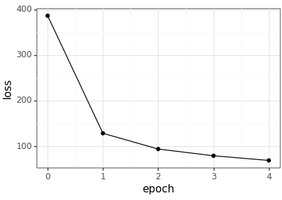

AANN 07/01/2024
CNN with dropout for MNIST classification
In this example we use a simple convolutional neural network with dropout (during training as introduced by Hinton et al (2012)) for handwritten digit recognition. This gets an accuracy on the test dataset of \(99\%\). Outside of using dropout during training, this is the same as the previous CNN example. This improves over the other method, but only slightly under these conditions. I suspect that since we are only training for 5 epochs there is not a whole heap of overfitting happening.
Loading packages
import torch import torch.nn as nn import torch.optim as optim import numpy as np import pandas as pd import plotnine as p9 from plotnine import * import niceneuron.io as nn_io import niceneuron.data as nn_data
Loading testing and training data
loss_csv = "example-2024-01-07-loss.csv" loss_png = "example-2024-01-07-loss.png" images_path = 'data/train-images.idx3-ubyte' labels_path = 'data/train-labels.idx1-ubyte' images = nn_io.read_idx(images_path) images = images.astype(np.float32) labels = nn_io.read_idx(labels_path) train_dataset = nn_data.MNISTDataset( images, labels, flatten=False, normalise=True) train_dataloader = torch.utils.data.DataLoader(train_dataset, batch_size=64, shuffle=True) test_images_path = 'data/t10k-images.idx3-ubyte' test_labels_path = 'data/t10k-labels.idx1-ubyte' test_images = nn_io.read_idx(test_images_path) test_images = test_images.astype(np.float32) test_labels = nn_io.read_idx(test_labels_path) test_dataset = nn_data.MNISTDataset( test_images, test_labels, flatten=False, normalise=True) test_dataloader = torch.utils.data.DataLoader(test_dataset, batch_size=64, shuffle=False)
Defining the model
Here we define the neural network we will use with the DemoCNNDropout
class.
class DemoCNNDropout(nn.Module): def __init__(self, dropout_prob=0.5): super(DemoCNNDropout, self).__init__() self._dropout_prob = dropout_prob self._conv1 = nn.Conv2d(1, 6, kernel_size=5, padding=2) self._pool1 = nn.AvgPool2d(2) self._conv2 = nn.Conv2d(6, 16, kernel_size=5, padding=0) self._pool2 = nn.AvgPool2d(2) self._fc1 = nn.Linear(5*5*16, 84) self._fc2 = nn.Linear(84, 10) self._relu = nn.ReLU() self._dropout = nn.Dropout(p=self._dropout_prob) def forward(self, x): x = self._pool1(self._relu(self._conv1(x))) x = self._pool2(self._relu(self._conv2(x))) x = x.view(-1, 5*5*16) x = self._relu(self._fc1(x)) x = self._dropout(x) x = self._fc2(x) return x
Train the model
Then we need to define a training loop for the model.
model = DemoCNNDropout(0.25) loss_fn = nn.CrossEntropyLoss() optimizer = optim.Adam(model.parameters(), lr=1e-3) model.train() loss_history = [] for epoch in range(5): epoch_cumloss = 0 for images, label in train_dataloader: images = images.unsqueeze(1) # Forward pass logits = model(images) loss = loss_fn(logits, label) epoch_cumloss += loss.item() # Backward pass optimizer.zero_grad() loss.backward() optimizer.step() print(f"Epoch {epoch} loss: {epoch_cumloss}") loss_history.append((epoch,epoch_cumloss)) loss_df = pd.DataFrame(loss_history, columns=['epoch', 'loss']) loss_df.to_csv(loss_csv, index=False)
Test the model
Then we test it with the following loop. Note that now we have dropout in the model, it is even more important that we remember to set the model to evaluation mode rather than training mode.
model.eval() correct = 0 total = 0 with torch.no_grad(): for images, label in test_dataloader: images = images.unsqueeze(1) logits = model(images) predicted = torch.argmax(logits, dim=1) total += label.size(0) correct += (predicted == label).sum().item() # print test accuracy print(f"Test accuracy: {correct / total}")
Visualise the results
Plot the resulting loss values across the epochs.

loss_df = pd.read_csv(loss_csv) loss_p9 = ( ggplot(loss_df, aes(x='epoch', y='loss')) + geom_point() + geom_line() + theme_bw() ) loss_p9.save(loss_png, height = 2.9, width = 4.1)